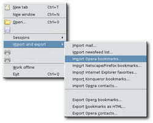

Datenmigration
Archivierte Anleitung
Dieser Artikel wurde archiviert, da er - oder Teile daraus - nur noch unter einer älteren Ubuntu-Version nutzbar ist. Diese Anleitung wird vom Wiki-Team weder auf Richtigkeit überprüft noch anderweitig gepflegt. Zusätzlich wurde der Artikel für weitere Änderungen gesperrt.
Die einfachste Methode auf eine neuere Version zu wechseln, besteht darin, die neue Version über die alte Version (d.h. in dasselbe Hauptverzeichnis wie die alte Version) zu installieren. In der Regel funktioniert das auch ganz gut. Mann kann allerdings auch vorhandene Daten (auch aus einem Windows-System) in eine Neuinstallation importieren.

Lesezeichen und Kontakte exportieren¶
Unter "File -> Import and Export" hat man folgende Auswahlmöglichkeiten, um etwas zu exportieren:
"Export Opera bookmarks..." - Exportiert die Lesezeichen, meist in die Datei opera6.adr.
"Export bookmarks as HTML..." - Exportiert die Lesezeichen im HTMl-Format, meist opera6.html.
"Export Opera contacts..." - Exportiert die Kontaktdaten, meist in die Datei contacts.adr.
Lesezeichen und Kontakte importieren¶
Unter "File -> Import and Export" hat man folgende Auswahlmöglichkeiten, um etwas zu exportieren:
"Import Opera bookmarks..." - Importiert die Lesezeichen, meist aus der Datei opera6.adr.
"Import Opera contacts..." - Importiert die Kontaktdaten, meist aus der Datei contacts.adr.
Zusätzlich hat man hier auch die Möglichkeit, die Lesezeichen und Kontakte der Programme Netscape/Firefox, und Konqueror zu importieren. Lesezeichen müssen vorher im jeweiligen Browser als *.htm- oder *.html-Datei exportiert werden. Kontakte müssen zunächst über einen Zwischenschritt in das .csv-Format (Export = Komma Getrennt) gespeichert und dann in das .adr-Format umgewandelt werden. Eine einfache Möglichkeit der Umwandlung findet man im Abschnitt Links.
E-Mails sichern/zurückspielen¶
Um alle seine E-Mails (inkl. E-Mail-Konten/Accounts) zu sichern, kopiert man den Ordner /home/BENUTZERNAME/.opera/mail/ in einen (Backup-)Ordner. In diesem mail-Ordner sind alle E-Mail-Daten enthalten. Installiert man Opera nun ganz neu auf einem neuen System oder möchte man die Mails für einen anderen Benutzer verwenden, kopiert man diesen mail-Ordner einfach über einen vorhandenen /home/BENUTZERNAME/.opera/mail/-Ordner. Sobald dieser Benutzer Opera startet, sieht man sofort alle Mails in den konfigurierten Filtern und man kann auch gleich wieder E-Mails abrufen und senden - ohne Neukonfiguration. Lediglich die Kontakte werden nicht bei den E-Mails mitgespeichert.
Speicherpfade frei wählen¶
Falls man seine E-Mails, Lesezeichen, Adressen oder irgendetwas anderes nicht im Standardverzeichnis /home/BENUTZERNAME/.opera speichern möchte, bietet Opera eine einfach Möglichkeit. In der Datei /home/BENUTZERNAME/.opera/operaprefs.ini sind sämtliche Speicherpfade und Einstellungen, die Opera verwendet, abgelegt. Man kann hier die Pfade nach belieben editieren (Sicherung nicht vergessen).
Lesezeichen finden sich unter:
[User Prefs] Hot List File Ver2=/PFAD/opera6.adr
E-Mail-Adressen unter:
[MailBox] AddressFile=/PFAD/contacts.adr
Falls man den Ordner in dem sämtliche E-Mails und alle eigenen E-Mail-Adressen inklusive POP- und SMTP-Einstellungen gespeichert werden verschieben möchte, muss man im Abschnitt [Mail] noch eine Zeile einfügen. Das sollte dann in etwa so aussehen:
[Mail] Mail Root Directory=/PFAD
So kann man eine Austauschdatei anlegen, auf die man von verschiedenen Plattformen/Rechnern zugreifen kann und hat stets alle wichtigen Daten und Einstellung so wie man sie möchte.

- Erstellt mit Inyoka
-
 2004 – 2017 ubuntuusers.de • Einige Rechte vorbehalten
2004 – 2017 ubuntuusers.de • Einige Rechte vorbehalten
Lizenz • Kontakt • Datenschutz • Impressum • Serverstatus -
Serverhousing gespendet von